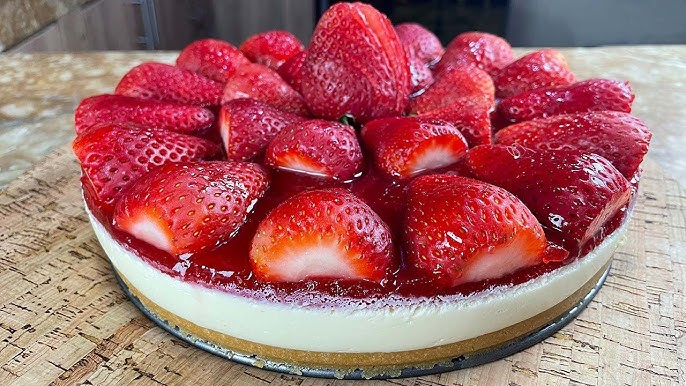

Sabores únicos para disfrutar en casa

Un clásico postre cremoso con base crocante y cobertura de frutillas frescas.El cheesecake de frutilla es un postre refrescante que combina una base crujiente de galletitas con un relleno cremoso de queso